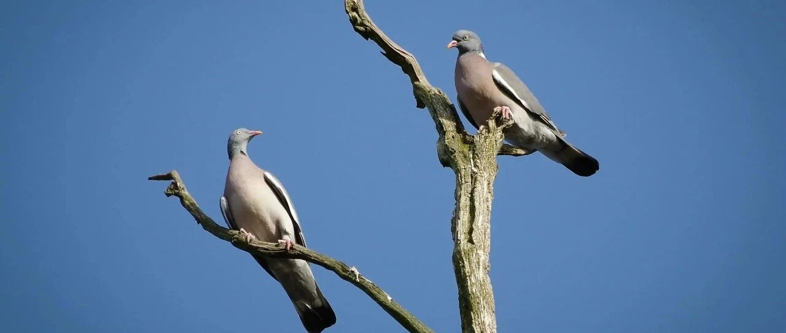

思路打开了~
这两天娃陆续都去上学了。
昨天我去接小儿子放学，被他班主任逮着就是一通猛夸。
大意就是上课专注力强、社交强、记忆力好、脑袋瓜子转得快、自信等等，几位学科老师都在办公室讨论他，诸如此类的。
有点吃不消这个，让我媳妇顶上去跟班主任聊，我溜之大吉。
去上学的前一天，我们在吃饭时，举杯恭喜他正式从“幼儿园的小朋友”，跨越到小学的“同学”这一身份上的转变。
然后跟他说到新的学校:去享受学习过程、去交新的朋友、去适应新的平台，以及不给老师和同学添麻烦。
从三岁的学前班开始，我们就跟他谈好，每个人有自己的工作要做，爸妈的工作是去上班，他也知道自己的“工作”是去上学。
相比家里，他似乎更喜欢去学校，看到谁都会打招呼，连门口的保安叔叔都不例外，每天都很开心去上学。
在送他去上学时，就跟他约好去接他的具体时间。接他时提前5-10分钟到，等接到了，在言语上给他做心理按摩，让他有“爸爸妈妈说到做到了”的安全感。
一周左右时间，他就已经没有任何分离焦虑，满满的安全感。
后来一直延续下来，直到如今入小学。几年过程中偶尔会迟到去接他，但会跟他道个歉，然后详细说明是什么原因导致迟到的，他总是很开心地“原谅”了我们。
三个小孩，我都是这么带过来的，效果也都挺不错的。
跟他们的相处，总结大概是四个字:信任和尊重。很少命令式地用家长身份去压他们。
结果是他们最爱我的同时，也最怕我。
我鼓励他们，要勤奋地思考与行动。很多知识原本就是空的，除非把它付诸实践，实践出真知。
大儿子最近一年从我手上接手走了属于他自己的账户，投资做得不错，分析得也很有道理。
比如他做美元定存，比例比较低，而且3-6个月的短期为主。
理由是方便需要时调配，而且美元定存后续的挑战，是美联储降息后，收益随之降低，越来越低。
美债的话，他也是以短债为主，计划年底降低美债占比，并在近期增加港险的占比。
理由是美债的收益，会随着美联储的降息被释放并稀释，因此需要增加港险等这类资产大厦“阻尼器”的配置，来让资产体量波动小，达到稳中有增的效果。
美股和港股的配置，也是微软、苹果和腾讯等这类老牌科技巨头为主。他整体的配置以稳健为主。
一年下来，嗯，思考得不错，行动不错，知识和实践结合得不错，效果也不错，整体可以给他评个90分+。
接下来几年，老二和老三，也会经历这个从知识到实践结合的过程。
前天，我在给他们做总结时，大儿子颇为感慨:知识和实践结合太重要了，知道和做到还是很不一样的。
那是，单纯书上的知识和实践得出的知识（知识和实践的结合），这其中的差距，是吹牛逼和真牛逼之间的差距。
比如书上知识形容一款武器厉害，就是列举各种数据，然后吹上天；实践得出的，是根据实战得出的结论总结去研发和改进。
一个是理论上，一个是实践上，完全不一样。
典型的，如大鹅吹上天的世界前列武器，被乌克兰拿着美制的近半个世纪前的阉割版武器打成了筛子。
前者武器的厉害，更多停留在理论和概念层面；后者武器的厉害，诞生于实战中，经过实战检验。
三个孩子去年在看世界地图时，说想去几个地方看看，看和书本上介绍的有什么不一样。
于是我们开始计划一年内去哪些地方，然后今年出去几个国家走了近五个月。
在他们心中，我一直都是说到做到、言出必行的人，无论大小事，都没有放过他们鸽子。
所以很多时候，我跟他们沟通问题，没什么障碍，说话比较管用。
他们也会跟我分享一些自己对一些事的看法和见解。
比如去年初，大儿子他说班上的同学好些在挺俄，但他觉得，俄才是个坏东西:
占领我们最多领土的就是它；各种搞小动作，一直掣肘我们；普公然撒谎，14年接受世界主流媒体说到期准备退休，结果食言……
他认为，可以趁机吃掉广袤的西伯利亚。自己吃不下，可以联合几大强国一起吃，彻底拿回之前被侵占的领土等。
这样一来，和主要发达国家搞好关系的同时，还能解决自身资源问题、战略纵深和出海口等问题。
听完觉得，有点意思，有自己的想法，虽然有些稚嫩，但思路打开了。有人还不如小孩，只会杠
对于他们，我更多是鼓励他们有自己的看法，保持自己的见解和创造性，这样对以后走向世界、融入世界会有大的帮助。
今天到杭州办点事，下午要赶回上海。在高铁上，就先写到这。
杭州的夏天是真热:夏天拉屎，用十张纸；九张擦汗，一张擦屎。
就这样吧。